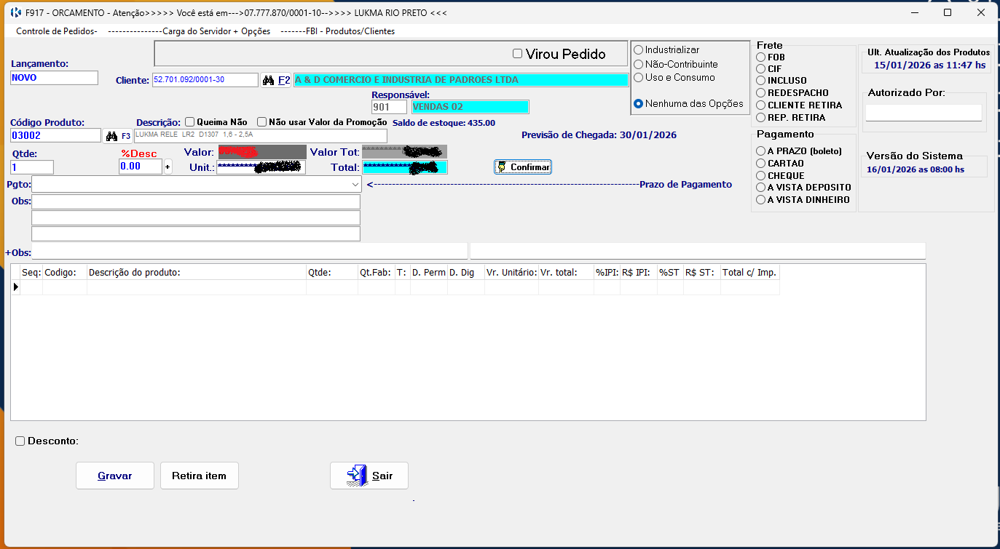
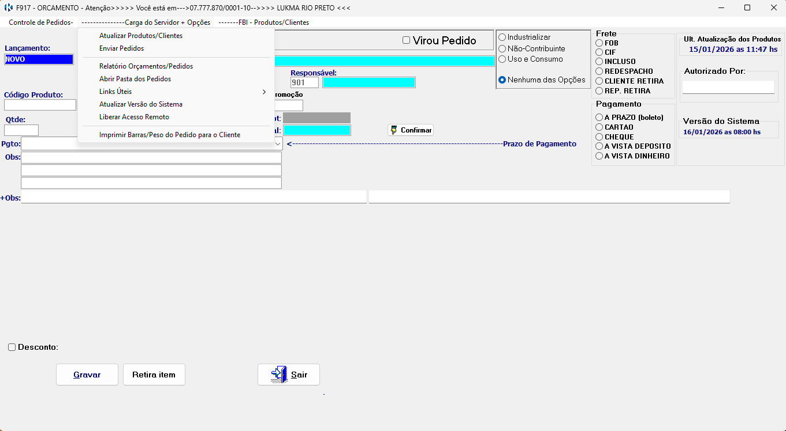
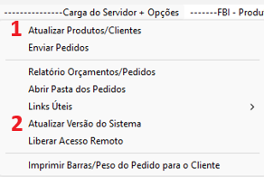

Como fazer atualização do Sistema Lukma e de produtos e clientes.
Este tutorial explica como fazer as atualizações necessárias no sistema
corretamente.
Passo a passo
-
Já logado no sistema Lukma.

-
Na barra superior selecionar Carga do Servidor + Opções.

-
Selecione a opção desejada: Atualizar Produtos/Clientes ou Atualizar Versão do Sistema..

Em caso de erro de acesso, verifique seus dados ou entre em contato
com o suporte.